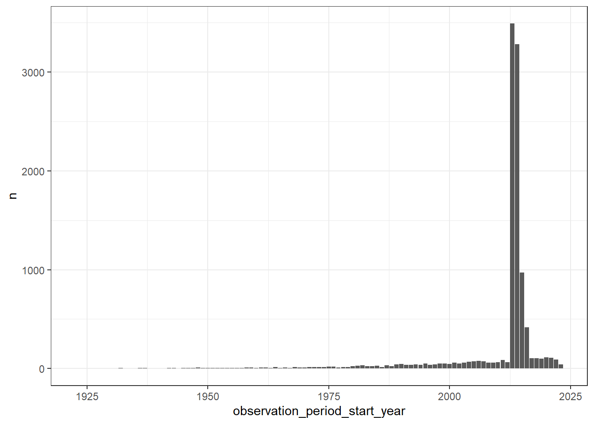

library(DBI)
library(dbplyr)
library(dplyr)
library(here)
library(CDMConnector)
library(ggplot2)
library(clock)8 Exploring the OMOP CDM
For this chapter, lets again use the synthetic Covid-19 dataset.
db<-dbConnect(duckdb::duckdb(),
dbdir = eunomiaDir(datasetName = "synthea-covid19-10k"))
cdm <- cdmFromCon(db, cdmSchema = "main", writeSchema = "main")Note: method with signature 'DBIConnection#Id' chosen for function 'dbExistsTable',
target signature 'duckdb_connection#Id'.
"duckdb_connection#ANY" would also be validcdm── # OMOP CDM reference (duckdb) of Synthea ────────────────────────────────────• omop tables: person, observation_period, visit_occurrence, visit_detail,
condition_occurrence, drug_exposure, procedure_occurrence, device_exposure,
measurement, observation, death, note, note_nlp, specimen, fact_relationship,
location, care_site, provider, payer_plan_period, cost, drug_era, dose_era,
condition_era, metadata, cdm_source, concept, vocabulary, domain,
concept_class, concept_relationship, relationship, concept_synonym,
concept_ancestor, source_to_concept_map, drug_strength, cohort_definition,
attribute_definition• cohort tables: -• achilles tables: -• other tables: -8.1 Counting people
The OMOP CDM is person-centric, with the person table containing records to uniquely identify each person in the database. As each row refers to a unique person, we can quickly get a count of the number of individuals in the database like so
cdm$person |>
count()# Source: SQL [?? x 1]
# Database: DuckDB v1.1.3 [eburn@Windows 10 x64:R 4.4.0/C:\Users\eburn\AppData\Local\Temp\RtmpsVpCqr\file6a7045c17ece.duckdb]
n
<dbl>
1 10754The person table also contains some demographic information, including a gender concept for each person. We can get a count grouped by this variable, but as this uses a concept we’ll also need to join to the concept table to get the corresponding concept name for each concept id.
cdm$person |>
group_by(gender_concept_id) |>
count() |>
left_join(cdm$concept,
by=c("gender_concept_id" = "concept_id")) |>
select("gender_concept_id", "concept_name", "n") |>
collect()# A tibble: 2 × 3
# Groups: gender_concept_id [2]
gender_concept_id concept_name n
<int> <chr> <dbl>
1 8532 FEMALE 5165
2 8507 MALE 5589The observation period table contains records indicating spans of time over which clinical events can be reliably observed for the people in the person table. Someone can potentially have multiple observation periods. So say we wanted a count of people grouped by the year during which their first observation period started. We could do this like so:
first_observation_period <- cdm$observation_period |>
group_by(person_id) |>
filter(row_number() == 1) |>
compute()
cdm$person |>
left_join(first_observation_period,
by = "person_id") |>
mutate(observation_period_start_year = get_year(observation_period_start_date)) |>
group_by(observation_period_start_year) |>
count() |>
collect() |>
ggplot() +
geom_col(aes(observation_period_start_year, n)) +
theme_bw()
Computing intermediate queries
The compute() function will force the computation of a query (by default to a temporary table in the database). In the example above we use it to split up two queries; the first to keep the first observation period record for each individual.
cdm$observation_period |>
group_by(person_id) |>
filter(row_number() == 1) |>
show_query()<SQL>
SELECT
observation_period_id,
person_id,
observation_period_start_date,
observation_period_end_date,
period_type_concept_id
FROM (
SELECT
observation_period.*,
ROW_NUMBER() OVER (PARTITION BY person_id) AS col01
FROM main.observation_period
) q01
WHERE (col01 = 1.0)Followed by a second query that left joins the person table with the result from the first (which is now in a temporary table), followed by extracted the year in which peoples first observation period starts and then, finally, a count by year.
cdm$person |>
left_join(first_observation_period,
by = "person_id") |>
mutate(observation_period_start_year=year(observation_period_start_date)) |>
group_by(observation_period_start_year) |>
count() |>
show_query()<SQL>
SELECT observation_period_start_year, COUNT(*) AS n
FROM (
SELECT
q01.*,
EXTRACT(year FROM observation_period_start_date) AS observation_period_start_year
FROM (
SELECT
person.*,
observation_period_id,
observation_period_start_date,
observation_period_end_date,
period_type_concept_id
FROM main.person
LEFT JOIN og_001_1736175099
ON (person.person_id = og_001_1736175099.person_id)
) q01
) q01
GROUP BY observation_period_start_yearWe could, however, have done this without compute, with instead the SQL being done all at once.
cdm$person |>
left_join(cdm$observation_period |>
group_by(person_id) |>
filter(row_number() == 1),
by = "person_id") |>
mutate(observation_period_start_year=year(observation_period_start_date)) |>
group_by(observation_period_start_year) |>
count() |>
show_query()<SQL>
SELECT observation_period_start_year, COUNT(*) AS n
FROM (
SELECT
q01.*,
EXTRACT(year FROM observation_period_start_date) AS observation_period_start_year
FROM (
SELECT
person.*,
observation_period_id,
observation_period_start_date,
observation_period_end_date,
period_type_concept_id
FROM main.person
LEFT JOIN (
SELECT
observation_period_id,
person_id,
observation_period_start_date,
observation_period_end_date,
period_type_concept_id
FROM (
SELECT
observation_period.*,
ROW_NUMBER() OVER (PARTITION BY person_id) AS col01
FROM main.observation_period
) q01
WHERE (col01 = 1.0)
) RHS
ON (person.person_id = RHS.person_id)
) q01
) q01
GROUP BY observation_period_start_yearIn this case the SQL is not much more complicated than before. However, you can imagine that without using computation to intermediate tables, the SQL associated with a series of data manipulations could quickly become unmanageable. Although we don’t want to overuse computation of intermediate queries, it is often a necessity when writing study analysis scripts.
A particular advantage of computing a query, is that we can then use the result for multiple subsequent queries. For example, say we want a count of condition occurrence and drug exposure records for those born before 1970. We could get these counts independently:
cdm$person |>
filter(year_of_birth < "1970") |>
select("person_id") |>
left_join(cdm$condition_occurrence,
by="person_id") |>
tally()# Source: SQL [?? x 1]
# Database: DuckDB v1.1.3 [eburn@Windows 10 x64:R 4.4.0/C:\Users\eburn\AppData\Local\Temp\RtmpsVpCqr\file6a7045c17ece.duckdb]
n
<dbl>
1 9305cdm$person |>
filter(year_of_birth < "1970") |>
select("person_id") |>
left_join(cdm$drug_exposure,
by="person_id") |>
tally()# Source: SQL [?? x 1]
# Database: DuckDB v1.1.3 [eburn@Windows 10 x64:R 4.4.0/C:\Users\eburn\AppData\Local\Temp\RtmpsVpCqr\file6a7045c17ece.duckdb]
n
<dbl>
1 165681But we could have instead first subsetted the person table and then used the result for both queries.
cdm$person_pre_1970 <- cdm$person |>
filter(year_of_birth < "1970") |>
compute()
cdm$person_pre_1970 |>
select("person_id") |>
left_join(cdm$condition_occurrence,
by="person_id") |>
tally()# Source: SQL [?? x 1]
# Database: DuckDB v1.1.3 [eburn@Windows 10 x64:R 4.4.0/C:\Users\eburn\AppData\Local\Temp\RtmpsVpCqr\file6a7045c17ece.duckdb]
n
<dbl>
1 9305cdm$person_pre_1970 |>
select("person_id") |>
left_join(cdm$drug_exposure,
by="person_id") |>
tally()# Source: SQL [?? x 1]
# Database: DuckDB v1.1.3 [eburn@Windows 10 x64:R 4.4.0/C:\Users\eburn\AppData\Local\Temp\RtmpsVpCqr\file6a7045c17ece.duckdb]
n
<dbl>
1 1656818.2 Counting records
What’s the number of condition occurrence records per person in the database? We can find this out like so
cdm$person |>
left_join(cdm$condition_occurrence |>
group_by(person_id) |>
count(name = "condition_occurrence_records"),
by="person_id") |>
mutate(condition_occurrence_records = if_else(
is.na(condition_occurrence_records), 0,
condition_occurrence_records)) |>
group_by(condition_occurrence_records) |>
count() |>
collect() |>
ggplot() +
geom_col(aes(condition_occurrence_records, n)) +
theme_bw()
How about we were interested in getting record counts for some specific concepts related to Covid-19 symptoms?
cdm$condition_occurrence |>
filter(condition_concept_id %in% c(437663,437390,31967,
4289517,4223659, 312437,
434490,254761,77074)) |>
group_by(condition_concept_id) |>
count() |>
left_join(cdm$concept,
by=c("condition_concept_id" = "concept_id")) |>
collect() |>
ggplot() +
geom_col(aes(concept_name, n)) +
theme_bw()+
xlab("")
Vocabulary tables
Above we’ve got counts by specific concept IDs recorded in the condition occurrence table. What these IDs represent is described in the concept table. Here we have the name associated with the concept, along with other information such as it’s domain and vocabulary id.
cdm$concept |>
glimpse()Rows: ??
Columns: 10
Database: DuckDB v1.1.3 [eburn@Windows 10 x64:R 4.4.0/C:\Users\eburn\AppData\Local\Temp\RtmpsVpCqr\file6a7045c17ece.duckdb]
$ concept_id <int> 45756805, 45756804, 45756803, 45756802, 45756801, 457…
$ concept_name <chr> "Pediatric Cardiology", "Pediatric Anesthesiology", "…
$ domain_id <chr> "Provider", "Provider", "Provider", "Provider", "Prov…
$ vocabulary_id <chr> "ABMS", "ABMS", "ABMS", "ABMS", "ABMS", "ABMS", "ABMS…
$ concept_class_id <chr> "Physician Specialty", "Physician Specialty", "Physic…
$ standard_concept <chr> "S", "S", "S", "S", "S", "S", "S", "S", "S", "S", "S"…
$ concept_code <chr> "OMOP4821938", "OMOP4821939", "OMOP4821940", "OMOP482…
$ valid_start_date <date> 1970-01-01, 1970-01-01, 1970-01-01, 1970-01-01, 1970…
$ valid_end_date <date> 2099-12-31, 2099-12-31, 2099-12-31, 2099-12-31, 2099…
$ invalid_reason <chr> NA, NA, NA, NA, NA, NA, NA, NA, NA, NA, NA, NA, NA, N…Other vocabulary tables capture other information about concepts, such as the direct relationships between concepts (the concept relationship table) and hierarchical relationships between (the concept ancestor table).
cdm$concept_relationship |>
glimpse()Rows: ??
Columns: 6
Database: DuckDB v1.1.3 [eburn@Windows 10 x64:R 4.4.0/C:\Users\eburn\AppData\Local\Temp\RtmpsVpCqr\file6a7045c17ece.duckdb]
$ concept_id_1 <int> 35804314, 35804314, 35804314, 35804327, 35804327, 358…
$ concept_id_2 <int> 912065, 42542145, 42542145, 35803584, 42542145, 42542…
$ relationship_id <chr> "Has modality", "Has accepted use", "Is current in", …
$ valid_start_date <date> 2021-01-26, 2019-08-29, 2019-08-29, 2019-05-27, 2019…
$ valid_end_date <date> 2099-12-31, 2099-12-31, 2099-12-31, 2099-12-31, 2099…
$ invalid_reason <chr> NA, NA, NA, NA, NA, NA, NA, NA, NA, NA, NA, NA, NA, N…cdm$concept_ancestor |>
glimpse()Rows: ??
Columns: 4
Database: DuckDB v1.1.3 [eburn@Windows 10 x64:R 4.4.0/C:\Users\eburn\AppData\Local\Temp\RtmpsVpCqr\file6a7045c17ece.duckdb]
$ ancestor_concept_id <int> 375415, 727760, 735979, 438112, 529411, 14196…
$ descendant_concept_id <int> 4335743, 2056453, 41070383, 36566114, 4326940…
$ min_levels_of_separation <int> 4, 1, 3, 2, 3, 3, 4, 3, 2, 5, 1, 3, 4, 2, 2, …
$ max_levels_of_separation <int> 4, 1, 5, 3, 3, 6, 12, 3, 2, 10, 1, 3, 4, 2, 2…More information on the vocabulary tables (as well as other tables in the OMOP CDM version 5.3) can be found at https://ohdsi.github.io/CommonDataModel/cdm53.html#Vocabulary_Tables.
8.3 Working with dates
When working with dates, the best supported functions come from the clock package. In particular, a lot of the date manipulations we might be interested in can be achieved through the use of add_days (to add days to or subtract days from a date), add_years (same as add_days by with years as the timescale), and date_count_between (to get the difference between two dates). For example let’s see how these can be applied to date fields in the observation period table.
library(clock)
library(ggplot2)
cdm$observation_period |>
mutate(observation_period_start_plus_30_days =
add_days(observation_period_start_date, 30L),
observation_period_start_date_plus_10_years =
add_years(observation_period_start_date, 10L)) |>
glimpse()Rows: ??
Columns: 7
Database: DuckDB v1.1.3 [eburn@Windows 10 x64:R 4.4.0/C:\Users\eburn\AppData\Local\Temp\RtmpsVpCqr\file6a7045c17ece.duckdb]
$ observation_period_id <int> 1, 2, 3, 4, 5, 6, 7, 8, 9,…
$ person_id <int> 1, 2, 3, 4, 5, 6, 7, 8, 9,…
$ observation_period_start_date <date> 2014-05-09, 1977-04-11, 2…
$ observation_period_end_date <date> 2023-05-12, 1986-09-15, 2…
$ period_type_concept_id <int> 44814724, 44814724, 448147…
$ observation_period_start_plus_30_days <dttm> 2014-06-08, 1977-05-11, 2…
$ observation_period_start_date_plus_10_years <dttm> 2024-05-09, 1987-04-11, 2…cdm$observation_period |>
dplyr::mutate(observation_days = date_count_between("observation_period_start_date",
"observation_period_end_date", "day")) |>
dplyr::mutate(observation_years = observation_days/ 365.25) |>
collect() |>
ggplot() +
geom_histogram(aes(observation_years),
binwidth=2, colour="grey") +
theme_bw()
Piping and SQL
Although piping queries has little impact on performance when using R with data in memory, when working with a database the SQL generated will differ when using multiple function calls (with a separate operation specified in each) instead of multiple operations within a single function call.
For example, a single mutate function above would generate the below SQL.
cdm$observation_period |>
mutate(observation_period_start_plus_30_days =
add_days(observation_period_start_date, 30L),
observation_period_start_date_plus_10_years =
add_years(observation_period_start_date, 10L)) |>
select("observation_period_id", "person_id",
"observation_period_start_plus_30_days",
"observation_period_start_date_plus_10_years") |>
show_query()<SQL>
SELECT
observation_period_id,
person_id,
DATE_ADD(observation_period_start_date, INTERVAL '30 day') AS observation_period_start_plus_30_days,
DATE_ADD(observation_period_start_date, INTERVAL '10 year') AS observation_period_start_date_plus_10_years
FROM main.observation_periodWhereas the SQL will be different if using multiple mutate calls (now using a sub-query).
cdm$observation_period |>
mutate(observation_period_start_plus_30_days =
add_days(observation_period_start_date, 30L)) |>
mutate(observation_period_start_date_plus_10_years =
add_years(observation_period_start_date, 10L)) |>
select("observation_period_id", "person_id",
"observation_period_start_plus_30_days",
"observation_period_start_date_plus_10_years") |>
show_query()<SQL>
SELECT
observation_period_id,
person_id,
observation_period_start_plus_30_days,
DATE_ADD(observation_period_start_date, INTERVAL '10 year') AS observation_period_start_date_plus_10_years
FROM (
SELECT
observation_period.*,
DATE_ADD(observation_period_start_date, INTERVAL '30 day') AS observation_period_start_plus_30_days
FROM main.observation_period
) q018.4 Statistical summaries
We can also use summarise for various other calculations
cdm$person |>
summarise(min_year_of_birth = min(year_of_birth, na.rm=TRUE),
q05_year_of_birth = quantile(year_of_birth, 0.05, na.rm=TRUE),
mean_year_of_birth = round(mean(year_of_birth, na.rm=TRUE),0),
median_year_of_birth = median(year_of_birth, na.rm=TRUE),
q95_year_of_birth = quantile(year_of_birth, 0.95, na.rm=TRUE),
max_year_of_birth = max(year_of_birth, na.rm=TRUE)) |>
glimpse()Rows: ??
Columns: 6
Database: DuckDB v1.1.3 [eburn@Windows 10 x64:R 4.4.0/C:\Users\eburn\AppData\Local\Temp\RtmpsVpCqr\file6a7045c17ece.duckdb]
$ min_year_of_birth <int> 1923
$ q05_year_of_birth <dbl> 1927
$ mean_year_of_birth <dbl> 1971
$ median_year_of_birth <dbl> 1970
$ q95_year_of_birth <dbl> 2018
$ max_year_of_birth <int> 2023As we’ve seen before, we can also quickly get results for various groupings or restrictions
grouped_summary <- cdm$person |>
group_by(gender_concept_id) |>
summarise(min_year_of_birth = min(year_of_birth, na.rm=TRUE),
q25_year_of_birth = quantile(year_of_birth, 0.25, na.rm=TRUE),
median_year_of_birth = median(year_of_birth, na.rm=TRUE),
q75_year_of_birth = quantile(year_of_birth, 0.75, na.rm=TRUE),
max_year_of_birth = max(year_of_birth, na.rm=TRUE)) |>
left_join(cdm$concept,
by=c("gender_concept_id" = "concept_id")) |>
collect()
grouped_summary |>
ggplot(aes(x = concept_name, group = concept_name,
fill = concept_name)) +
geom_boxplot(aes(
lower = q25_year_of_birth,
upper = q75_year_of_birth,
middle = median_year_of_birth,
ymin = min_year_of_birth,
ymax = max_year_of_birth),
stat = "identity", width = 0.5) +
theme_bw()+
theme(legend.position = "none") +
xlab("")
9 Further reading
- …